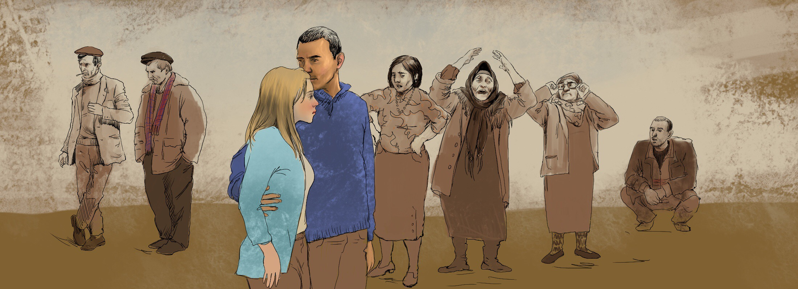
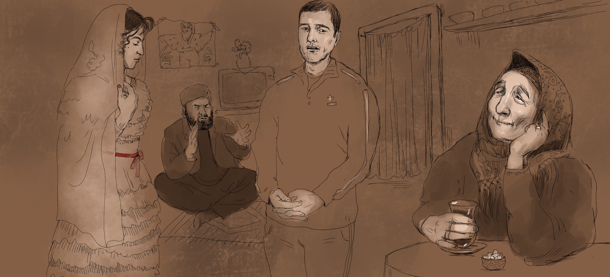
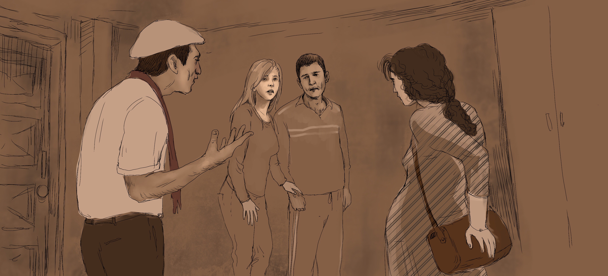
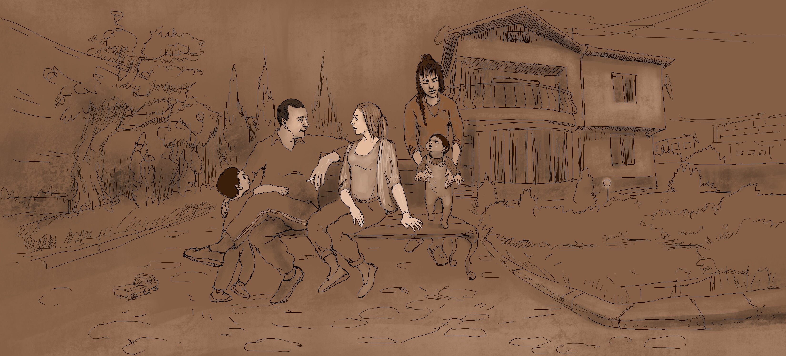

Многожёнство по общественному договору?
Эльмир МирзоевВ Азербайджане закон запрещает многоженство, но есть немало семей, где мужчина фактически состоит в браке с несколькими женщинами, почти не скрывая этого.
Азербайджан, как светское государство, не признает полигамные браки. Статья 12 Семейного кодекса Азербайджанской Республики от 1999 года гласит: "Не допускается заключение брака между лицами, одно из которых или оба состоят в другом браке". (12.0.3.). Тем не менее, популярность таких семейных союзов за 25 лет независимости значительно выросла.
По мнению адвоката Эльчина Садыгова, "руководствуясь этой статьей, формально можно считать, что многоженство в Азербайджане незаконно, но за нарушение этого пункта статьи не предусмотрено никакого наказания. Поэтому полигамные браки, разумеется, без государственной регистрации, в принципе, ни для мужчин, ни для женщин не запрещены".
Что касается детей, родившихся в подобных браках, адвокат сказал: "Согласно статье 44.3. (установление происхождения ребенка) Семейного кодекса, отцовство лица, не состоящего в браке с матерью ребенка, устанавливается подачей отцом и матерью ребенка совместного заявления в соответствующий орган исполнительной власти». По словам адвоката, установление факта признания отцовства в судебном порядке также регулируются несколькими статьями вышеупомянутого кодекса.
"Права и обязанности детей, рожденных от лиц, не состоящих в браке, устанавливаются согласно статье 48, которая гласит, что при установлении отцовства в порядке, предусмотренном статьями 44-45 семейного кодекса, дети по отношению к родителям и родственникам имеют те же права и обязанности, что и дети родителей, состоящих между собой в браке", - заключил адвокат.
Как выглядит многоженство на практике?
Габиль (имя изменено) родился в многодетной семье в глухой деревушке Азербайджана. Учился Габиль хорошо, и поступать в вуз поехал в Беларусь – в Минске еще с советских времен жил дальний родственник. Там Габиль познакомился со студенткой Аленой (имя изменено) и к окончанию института пара решила пожениться.
В родной деревне Габиля от этой новости пришли в ужас. "Уруснан эвленир" (женится на русской) – в некоторых районах Азербайджана это практически клеймо. Азербайджанские мужчины едут в страны СНГ на заработки, учиться или по другим причинам и, бывает, встречают там "чужестранку". Семья была решительно против брака и выдвинула ультиматум: "Или она, или мы!"
Габиль выбрал Алену, но семью потерял – родственники прекратили всякое общение с "неблагодарным сыном". Не стали помогать даже когда молодые переехали в Баку и начали снимать квартиру, преодолевая бытовые проблемы.
"Или она, или мы!"
Брак оказался удачным – Габиль занялся бизнесом, связанным с нефтью, в середине нулевых супруги построили дом на окраине города и собирались завести ребенка.
И вдруг позвонил старший брат Габиля - мол, матери внезапно стало плохо и хорошо бы приехать попрощаться. Габиль бросился в родную деревню, опасаясь не застать мать в живых. Но обнаружил, что в доме – праздник, приехали родственники, подходят к нему, поздравляют. Но праздновали, как выяснилось, вовсе не возвращение Габиля домой, а… его свадьбу!
Вполне здоровая мать и старший брат заявили, что семья больше не будет вмешиваться в его жизнь, пусть живет с "той женщиной", но здесь у него будет жена из своих. Габиля решили женить на молодой родственнице. Более того, невесту уже привезли, и теперь вернуть ее обратно в отчий дом нельзя – это станет позором для всей семьи.
Брат объяснил растерянному Габилю, что брак будет заключен местным муллой, безо всяких "бумажек из ЗАГСа", так что ничего незаконного в этом нет. После чего молодая жена останется жить в доме свекрови, будет помогать по хозяйству, а от Габиля требуется только присылать деньги и время от времени навещать супругу.
"Никакая бумажка из ЗАГС-а не нужна"
"Деде-баба гайдасыйнан" (по обычаю наших дедов и отцов) – завершил свою речь старший брат и привел в комнату молодую девушку. Так Габиль впервые увидел свою невесту – сопротивляться дальше не имело смысла. В комнату вошел мулла, прочел их никах и отныне "по воле Аллаха" они стали мужем и женой ....
Через несколько дней Габиль вернулся к себе в Баку. Алене он, разумеется, ничего не сказал, и жизнь пошла своим чередом. А через несколько месяцев в дверь их бакинского дома постучали. На пороге Алена увидела незнакомого мужчину, держащего за руку молодую беременную женщину. Мужчина - старший брат ее мужа - рассказал Алене, что привез семью Габиля.
Алена была в шоке. Но Габиль, срочно вернувшийся домой, все подтвердил. "Мы больше не можем так жить, ты сам должен содержать свою семью", – процедил сквозь зубы брат и оставил растерянного Габиль с двумя плачущими женщинами ....
Алена сначала страшно переживала, плакала каждый день, собиралась уходить, но Габиль был непреклонен. Вторую жену, беременную, он бросить не мог. Когда Алена поняла, что развестись и вернуться в Минск не может, она смирилась. Дом разделили между женщинами: второй, верхний этаж для Алены, а нижний, где находилась кухня, для второй жены. Вскоре родился сын, и вторая жена занялась младенцем и заодно стала обслуживать всю семью. Так, постепенно и сжились вместе.
Жены особо не общались между собой, но и не конфликтовали. Соседи отнеслись к ситуации с пониманием, а властей это никак не интересовало.
Со временем Габилю начало казаться, что хотя родные его и обманули, все сложилось лучшим образом, и вторая жена ему действительно тоже нужна. Семья и по сей день живет вместе, детей у них уже двое.
В Азербайджане исторически многожёнство практиковалось, исключая 70-летний советский период. Во времена СССР полигамия достаточно жестко преследовалась (согласно статье 235 УК СССР, многоженство наказывалось лишением свободы до одного года, исправительными работами на тот же срок или крупным штрафом). Однако даже в те времена существовали подобные "ячейки общества", особенно в провинции.
Руководитель НПО «Чистый мир» Мехрибан Зейналова считает, что появление таких семей обусловлено в первую очередь социально-экономическими факторами, а только потом ментальными и религиозными.
"Таких случаев на самом деле не очень много, в основном это явление охватывает южные регионы страны. Проблема заключается в том, что девочки не получают должного образования, это играет в дальнейшем свою негативную роль в их жизни, часто они не могут себя обеспечить сами", - говорит Зейналова.
Эксперт считает, что обществу необходимо уделять больше внимания развитию женского предпринимательства в стране. Например, если ввести специальный беспроцентный кредит для женщин, то это может в дальнейшем привести к экономической независимости многих из них.
Имеется ли статистика по подобным случаям в Азербайджане?
Эльгюн Сафаров, глава информатики и аналитических исследований Государственного комитета по проблемам семьи, женщин и детей Азербайджана, на наш запрос ответил, что по подобным полигамным семьям статистической информации у них не имеется и жалобы в связи с этими проблемами не поступали.
"Но сотрудники нашего комитета часто участвовали в судебных процессах в связи с проблемами подобных семей. Особенно это касается женщин, которые заключили никах с гражданами Турции и России. Там возникали проблемы, касающиеся имущества и родительских прав. Но родительские права согласно Семейному кодексу Азербайджана имеются у всех граждан - это в любом случае, и брак тут не играет роли. (Так что) рожденные в таких браках дети имеют право и на алименты, и на наследство.
В законодательстве нет никаких ограничений на религиозный брак, то есть на никах, но могу сказать, что существует неофициальная директива по пресечению подобных случаев. Мы неофициально попросили (об этом) Управление мусульман Кавказа, чтобы их муллы перед тем, как заключить религиозный брак, требовали от молодоженов соответствующие официальные документы о заключении брака. Но лично я не склонен думать, что это правило применяется эффективно»,– сказал Эльгюн Сафаров.
"Для пресечения подобных случаев на самом деле(,) нам необходимо приложить усилия в направлении просвещения населения, реформирования нынешнего законодательства и продолжения наших исследований", – заключил эксперт.
Действительно, существуют ли препятствия для никаха, и те лица из духовенства, которые должны его совершать – требуют ли они от граждан сначала справку о браке?
На этот вопрос в Управлении мусульман Кавказа практически отказались отвечать, перенаправив запрос на другой номер телефона, который переключался на факс.
В сегодняшних реалиях Азербайджана распространению многоженства "способствует" несколько важных социальных факторов. Это, безусловно, последствия затяжного регионального военного противостояния, массовой эмиграции мужчин активного возраста из страны, общая бедность и безработица, особенно в провинции.
Член Совета религиозных экспертов, ученый-теолог Эльшад Мири считает, что ислам вовсе не поощряет многоженство, а всего лишь разрешает.
Теоглог говорит, что об этом говорится в третьем аяте суры "Ан-Ниса": "Если вы боитесь, что не будете справедливы к сиротам, то женитесь на [других] женщинах, которые нравятся вам: на двух, трех, четырех. Если же вы боитесь, что не будете [одинаково] справедливы к ним, то [довольствуйтесь] одной или [невольницами], которыми овладели ваши десницы. Это ближе к тому, чтобы избежать несправедливости [или бедности]."
Богослов и правозащитник Гаджи Ильгар Ибрагимоглу же прокомментировал наш вопрос о браке в исламе следующим образом: "Семья в Исламе - это священный очаг. Это духовный союз между супругами, который заключается во имя божественного согласия. Юридическая система Ислама предусматривает первичную и вторичную систему. Брак с одной женой является первичной нормой.
Но при необходимости Ислам также предусматривает и возможность многоженства. Но это, скорее, не носит характер нормы, а также обуславливается особыми стандартами, соблюдение которых на практике требует весьма пристального подхода. И краеугольным камнем этого подхода является концепция справедливости".